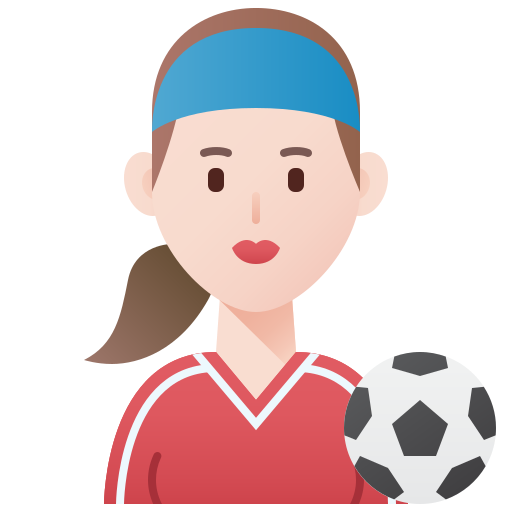

No es un secreto que algunos futbolistas profesionales ganan en una semana el dinero que la mayoría de las personas no pueden lograr en un año, cuentan con inmensas casas y llevan una vida de ricos y famosos.
tiro en la pobreza
Lo que está claro es que tienen que someterse a exigentes sesiones de trabajo para acondicionar su físico, además de seguir una meticulosa rutina en sus vidas para aguantar ese esfuerzo.
ranking de mejores futbolistas
10/11/21
eden hazard
gareth bale
paul pogba
andres iniesta
robert lewandowski
mo salah
kylian mbappé
neymarJR
LIO messi
Cristiano ronaldo
el trabajo y el esfuerzo en los futbolistas es algo que los lleva a un cambio radical, que basicamente a mmuchos les cambia la vida
investigacion semana 5
23/02/22
energia
Los futbolistas están en constante movimiento: corriendo, saltando, tirándose y girando, con cambios de dirección contantes que les hacen perder hasta 1.000 calorías por partido, lo que requiere de mucha energía.
brasileiro
El encargado del área deportiva del Swansea explicó que "los carbohidratos, grasas y proteínas se transforman en el organismo en trifosfato de adenosina, un nucleótido fundamental en la obtención de energía celular para los músculos".
declaraciones fisicas
"Esto se logra para que el cuerpo responda a las demandas que van surgiendo durante un partido, tanto si es de una actividad de alta intensidad como al atacar o defender una jugada de gol como si es el trabajo básico de posicionamiento en una cancha", le dijo a la BBC Northeast.
mejores sueldos en el futbol
10/11/21
ranking de futbolistas mejor pagados
en el video nos muestra dentro del futbol pero hay mas alla de eso pero
no mas alla de cristiano y normalmente cobran lo que generan y el entreteniemiento
es algo mas alla que se paga increibemente bien
el futbol puede tener distintas reacciones esto lo hace de las cosas mas importantes ya que da sentido a muchas cosas como tambien la emocion que da
emociones en el futbol
16/02/22
es excesivo?
Una identificación excesiva con un equipo de fútbol "repercute en la salud física y mental de los hinchas y puede causar ataques al corazón, violencia verbal, agresiones, disturbios a la salida, enfados familiares, no poder conciliar el sueño, ansiedad, peor rendimiento en el trabajo y reacciones emocionales
emociones
Las personas se suelen identificar con un equipo de fútbol por la necesidad de encontrar el sentido de pertenencia. Además, en el caso del deporte, esta afición se suele transmitir de padres a hijos y las experiencias en edades tempranas dejan una importante huella emocional. Por otro lado, Cuevas ha afirmado que el fútbol es un deporte "muy emocional" que permite crear lazos entre las personas que lo disfrutan juntas.
Las personas se suelen identificar con un equipo de fútbol por la necesidad de encontrar el sentido de pertenencia. Además, en el caso del deporte, esta afición se suele transmitir de padres a hijos y las experiencias en edades tempranas dejan una importante huella emocional. Por otro lado, Cuevas ha afirmado que el fútbol es un deporte "muy emocional" que permite crear lazos entre las personas que lo disfrutan juntas.
detalles del deporte
ejercicio
Desde las categorías más bajas del fútbol profesional los jugadores tienden a recorrer muchos kilómetros durante un partido.
De hecho, los mejores equipos son los que controlan más la posesión del balón, por lo tanto pueden dosificar mejor que aquellos futbolistas que deben estar reaccionando constantemente para mantener su lugar sobre el campo.
balon en hojas
Los clubes monitorean cada mínimo detalle con la última tecnología de GPS para seguir el estado de forma de los jugadores durante los entrenamientos y partidos una vez que la liga lo permitió.
Estos dispositivos se colocan por debajo del uniforme y permite recopilar una gran cantidad de valiosa información en cuanto a la velocidad, la aceleración, la distancia y el ritmo cardiaco, la cual se revisa detalladamente por un equipo especializado.
"Es por eso que los cuerpos de los futbolistas pueden ser llevados hasta un límite, tratando de no abusar, pero que en algunos casos resulta inevitable hacerlo", aceptó Northeast..
investigacion semana 9
¿el futbol es un acto social?
Los aficionados al fútbol tienden a ver los partidos en compañía para compartir sus opiniones y, en muchos casos, los encuentros entre dos equipos se convierten en una reunión familiar. Incluso en los campos de fútbol, si la persona acude sola, lo más probable es que termine hablando con el hincha de al lado.
tiro libre
Los datos del muestreo indican que solo un 33% de los futbolistas encuestados afirmó tener “confianza” en lo relativo a su segunda etapa profesional tras el retiro; que un 49% tiene “alguna idea o algunos intereses” y que un 18% no sabé a qué se dedicará cuando llegue el día después.
En el caso de los estadios, el contagio emocional aumenta debido a las neuronas espejo, que controlan la empatía y la imitación entre las personas. Estar rodeado de mucha gente protege el anonimato y permite conductas negativas, como el insulto. La masa, en vez de recriminar, suele mostrar su apoyo, al igual que ocurre cuando se protesta por una jugada sin haberla visto, solo porque los demás lo hacen.
 semana 10
9/05/22
¿es justo el futbol?
Luego de ver a Macedonia escribir otra tragedia futbolera, en la que demostró que en la cancha muchas veces la playera obliga al portador, lo mete en una zona en la que, lejos de hacerlo sentir cómodo, lo pone cerca de la catástrofe, podemos deducir que es tema de la meritocracia no existe. Italia es junto a Alemania y Brasil, los máximos ganadores de la Copa del Mundo, pero lleva dos ciclos en los que no figura.
real vardrid
Si de justicia se tratara, Macedonia quizá no tendría la posibilidad de acceder a este sitio histórico, en el que va a ser recodado siempre por dejar nocaut a un favorito, pues así parten los campeones de las confederaciones cuando llegan a esa justa, a esa competencia donde, para la próxima vez que Italia asista, deberá festejar como si la hubiera ganado ya.
Cuando se conoció el repechaje, todo el mundo pensó en que dos potencia iban a pelear por un sitio, pero uno ya ni por lo menos llegó a eso, quizá Portugal ya sabe que deberá meterse en la cabeza que Macedonia apelará a la justicia, el simple hecho de conseguir lo que hizo, ya es suficiente para tener un puesto en Qatar, aunque en su proceso, haya dado cuenta de la injusticia de dejar sin posibilidad al actual campeón de Europa.
 fisico en futbolistas
fisico en futbolistas
 ranking de mejores futbolistas
ranking de mejores futbolistas investigacion semana 5
investigacion semana 5

 mejores sueldos en el futbol
mejores sueldos en el futbol Paginas oficiales
Paginas oficiales
 emocion en futbol
emocion en futbol
 emociones en el futbol
emociones en el futbol

 detalles del deporte
detalles del deporte

 investigacion semana 9
investigacion semana 9